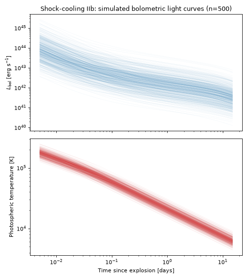

Shock-Cooling Emission from Type IIb SNe#
Type IIb supernovae are core-collapse explosions of massive stars that have been stripped of most, but not all, of their hydrogen envelope. Many show a double-peaked light curve: an early, hours- to-days-long flash powered by the shock heating and subsequent cooling of the extended envelope, followed – after a dip – by a broader, weeks-long peak powered by radioactive \(^{56}\mathrm{Ni}\) decay, the same mechanism that powers most other core-collapse SN light curves. This population models only the first of those two components: the early shock-cooling emission, using the semi-analytic diffusion-envelope model of Morag et al.[1].
This population is implemented by
ShockCoolingIIb, pairing
MoragShockCoolingSED with the rate/duration
metadata described below. It is deliberately not a full Type IIb light curve model – see
Quick Facts below for why its duration window is so much shorter than the other supernova
populations in this package.
Quick Facts#
Quantity |
Value |
Source |
Notes |
|---|---|---|---|
Rate |
\(R_\mathrm{CC}(z) = k h^2 \psi_\mathrm{UV}(z)\); Type IIb 10.3% of \(R_\mathrm{CC}(z)\) |
Strolger et al.[2], Madau and Dickinson[3], Li et al.[4], Shivvers et al.[5] |
Tracks the cosmic star-formation history; 10.3% is the stripped-envelope-corrected local Type IIb fraction of core-collapse SNe from the LOSS volume-limited sample [5]. |
Redshift limit |
\(z = 1\) |
– |
Generous relative to the brief, luminous shock-cooling phase this SED targets. |
Duration |
20 days |
– |
Deliberately short: sampling 20,000 draws from the priors below, Morag+24’s own stated
validity window (its Eqs. 17-18) extends past 10 days for only ~2% of realizations, and
essentially never reaches the ~15-25 day radioactive-decay peak that a full
Type IIb light curve would show. Parameter/time combinations outside that window evaluate
to |
SED Model#
There are two shock-cooling SED models available, sharing one set of physical parameters (a shock velocity scale, progenitor radius, envelope/core mass, and an opacity fixed at the electron-scattering value):
MoragShockCoolingSED(the default) implements Morag+24’s full frequency-dependent SED: a blackbody at the photospheric color temperature, reshaped by UV line suppression above \(\sim3.5\,T_\mathrm{col}\) and a separate diffusion-limited/free-free prescription below it.MoragShockCoolingBlackbodySEDimplements the simpler alternative: a pure blackbody at the same color temperature, with no frequency reshaping.
Both share the same bolometric luminosity and color-temperature evolution, a closed-form, diffusion-envelope solution calibrated against numerical radiation-hydrodynamics simulations:
with the color temperature declining from a scale value near \(t_\mathrm{break}\) as a broken power law in time. \(L_\mathrm{break}\), \(t_\mathrm{break}\), and \(t_\mathrm{tr}\) are themselves closed-form combinations of the physical parameters below; see Morag et al.[1] for their exact form and for the full frequency-dependent SED (its Eqs. A1-A12) – the details are intentionally not reproduced here.
The two models’ bolometric luminosities are physically identical, but only
MoragShockCoolingBlackbodySED’s emergent spectrum integrates back to it exactly: a
blackbody conserves its own normalization by construction, while the UV-suppressed reshaping in
MoragShockCoolingSED does not (by as much as ~15-20%, depending on epoch) – an artifact of
how Morag+24 construct the two pieces independently, not a bug in either implementation.
Parameter priors
All five parameters use fairly broad priors, since the goal here is to sample plausible shock-cooling realizations rather than to reproduce a specific calibrating event.
Parameter |
Symbol |
Prior |
Notes / Source |
|---|---|---|---|
|
\(v_*\) |
LogNormal(\(v_*/10^{8.5}\,\mathrm{cm\,s^{-1}}\); mean=0, \(\sigma\)=0.5) |
Scale velocity of the shock near the stellar surface. |
|
\(R\) |
LogNormal(\(R/10^{13}\,\mathrm{cm}\); mean=0, \(\sigma\)=0.5) |
Progenitor stellar radius. |
|
\(\kappa\) |
Fixed (0.34 \(\mathrm{cm^2\,g^{-1}}\)) |
Electron-scattering opacity. |
|
\(M_E\) |
LogNormal(\(M_E/M_\odot\); mean=0, \(\sigma\)=0.5) |
Envelope mass. |
|
\(M_C\) |
LogNormal(\(M_C/M_\odot\); mean=0, \(\sigma\)=0.5) |
Core mass. |
Simulated Light Curves#
The plot below draws 500 random parameter realizations from the priors above and shows the
resulting bolometric light curves and photospheric temperatures, using the default
MoragShockCoolingSED. No comparison data is overlaid: unlike the other supernova
populations in this package, there is not yet a curated bolometric/temperature dataset for
shock-cooling Type IIb events under test_data/transients.
(Source code, png, hires.png, pdf)
{kind=link}
{kind=link}

Simulated UVOIR Light Curves (Rubin + UVEX)#
Because the shock-cooling phase lasts only days, seeing it well requires a cadence much tighter
than the multi-day cadences typically used for longer-lived transients. The two panels below show
two random parameter realizations at a fixed redshift (\(z=0.02\), roughly 90 Mpc), each
observed by Rubin (g/r/i, 30 s visits) and UVEX (FUV/NUV, 900 s visits) on a
shared 12-hour cadence over the first 12 days: solid curves are the noiseless theory light curves,
points are simulated photometry (shot noise plus, for Rubin, its own photometric-calibration
floor), and open triangles are \(\mathrm{SNR}<5\) upper limits. This is meant to give a sense
of what the model’s SEDs actually look like observationally, not a rate/yield forecast – see the
other transient pages in this section for that kind of analysis.